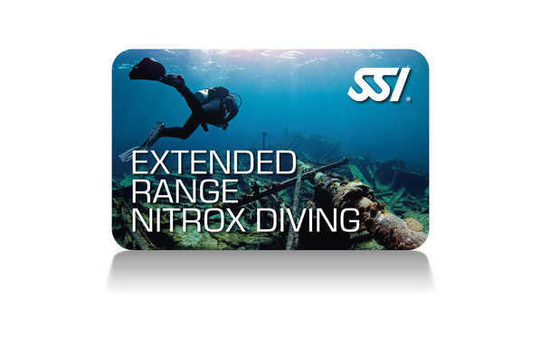

TÉCNICO
Cursos Técnicos XR
Formación avanzada para buceo técnico de mezclas de gas. Desde Extended Range hasta Trimix Hipóxico, estos programas te llevan más allá de los límites del buceo recreativo.
Haz clic en cada curso para ver su información completa en un popup.

Nuestros Cursos Técnicos XR
Haz clic en cada curso para ver más información detallada.